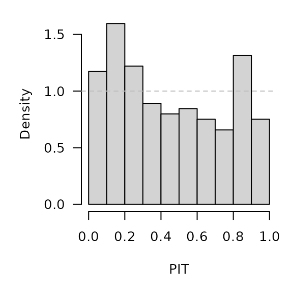

Forecasting Swiss ILI counts using simple log-normals by calendar week
Sebastian Meyer
2023-11-29
Source:vignettes/CHILI_naive.Rmd
CHILI_naive.Rmd
options(digits = 4) # for more compact numerical outputs
library("HIDDA.forecasting")
library("ggplot2")
source("setup.R", local = TRUE) # define test periods (OWA, TEST)In this vignette, we compute naive reference forecasts to be compared
with the more sophisticated modelling approaches presented in the other
vignettes. Our naive approach to predict weekly ILI counts from 2012-W48
to 2016-W51 (the OWA period) is to estimate a log-normal
distribution from the counts observed in the previous years in the same
calendar week. At each week, we estimate the two parameters using
maximum likelihood as implemented in
MASS::fitdistr().
Ripley B (2023). MASS: Support Functions and Datasets for Venables and Ripley’s MASS. R package version 7.3-60, https://CRAN.R-project.org/package=MASS.
One-week-ahead forecasts
CHILI_calendarweek <- as.integer(strftime(index(CHILI), "%V"))
naiveowa <- t(sapply(X = OWA+1, FUN = function (week) {
cw <- CHILI_calendarweek[week]
index_cws <- which(CHILI_calendarweek == cw)
index_prior_cws <- index_cws[index_cws < week]
MASS::fitdistr(CHILI[index_prior_cws], "lognormal")$estimate
}))
.PIT <- plnorm(CHILI[OWA+1], meanlog = naiveowa[,"meanlog"], sdlog = naiveowa[,"sdlog"])
hist(.PIT, breaks = seq(0, 1, 0.1), freq = FALSE, main = "", xlab = "PIT")
abline(h = 1, lty = 2, col = "grey")
naiveowa_scores <- scores_lnorm(
x = CHILI[OWA+1],
meanlog = naiveowa[,"meanlog"], sdlog = naiveowa[,"sdlog"],
which = c("dss", "logs"))
summary(naiveowa_scores)## dss logs
## Min. :10.4 Min. : 5.43
## 1st Qu.:12.2 1st Qu.: 6.48
## Median :13.9 Median : 7.82
## Mean :14.9 Mean : 8.06
## 3rd Qu.:17.3 3rd Qu.: 9.40
## Max. :27.6 Max. :12.71Note that discretized forecast distributions yield almost identical scores (essentially due to the large counts):
naiveowa_scores_discretized <- scores_lnorm_discrete(
x = CHILI[OWA+1],
meanlog = naiveowa[,"meanlog"], sdlog = naiveowa[,"sdlog"],
which = c("dss", "logs"))
summary(naiveowa_scores_discretized)## dss logs
## Min. :10.4 Min. : 5.43
## 1st Qu.:12.2 1st Qu.: 6.48
## Median :13.9 Median : 7.82
## Mean :14.9 Mean : 8.06
## 3rd Qu.:17.3 3rd Qu.: 9.40
## Max. :27.6 Max. :12.71
naiveowa_quantiles <- sapply(X = 1:99/100, FUN = qlnorm,
meanlog = naiveowa[,"meanlog"],
sdlog = naiveowa[,"sdlog"])
osaplot(
quantiles = naiveowa_quantiles, probs = 1:99/100,
observed = CHILI[OWA+1], scores = naiveowa,
start = OWA[1]+1, xlab = "Week", ylim = c(0,60000),
fan.args = list(ln = c(0.1,0.9), rlab = NULL)
)
Long-term forecasts
With this naive forecasting approach, the long-term forecast for a whole season is simply composed of the sequential one-week-ahead forecasts during that season.
rownames(naiveowa) <- OWA+1
naivefor <- lapply(TEST, function (testperiod) {
owas <- naiveowa[as.character(testperiod),,drop=FALSE]
list(testperiod = testperiod,
observed = as.vector(CHILI[testperiod]),
meanlog = owas[,"meanlog"], sdlog = owas[,"sdlog"])
})
invisible(lapply(naivefor, function (x) {
PIT <- plnorm(x$observed, meanlog = x$meanlog, sdlog = x$sdlog)
hist(PIT, breaks = seq(0, 1, 0.1), freq = FALSE,
main = format_period(x$testperiod, fmt = "%Y", collapse = "/"))
abline(h = 1, lty = 2, col = "grey")
}))
t(sapply(naivefor, function (x) {
quantiles <- sapply(X = 1:99/100, FUN = qlnorm,
meanlog = x$meanlog, sdlog = x$sdlog)
scores <- scores_lnorm(x = x$observed,
meanlog = x$meanlog, sdlog = x$sdlog,
which = c("dss", "logs"))
osaplot(quantiles = quantiles, probs = 1:99/100,
observed = x$observed, scores = scores,
start = x$testperiod[1], xlab = "Week", ylim = c(0,60000),
fan.args = list(ln = c(0.1,0.9), rlab = NULL))
colMeans(scores)
}))## dss logs
## [1,] 15.70 8.729
## [2,] 15.81 8.499
## [3,] 16.12 9.114
## [4,] 16.33 9.095